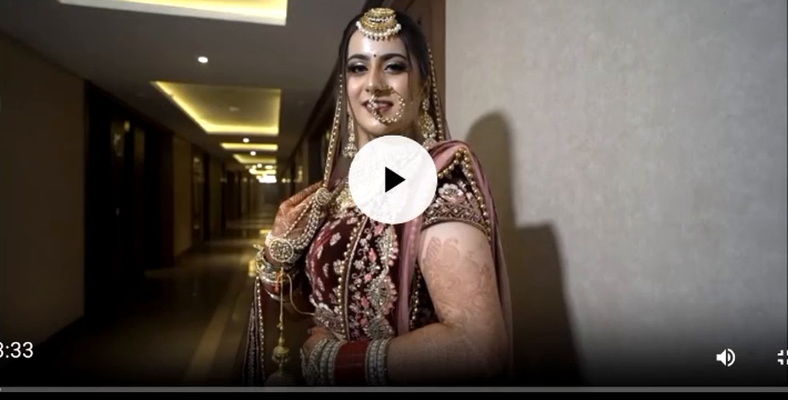
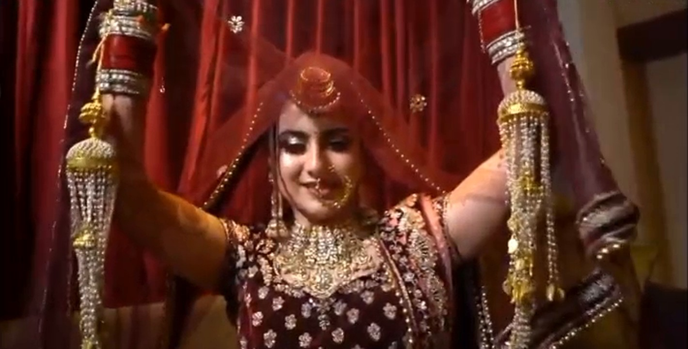
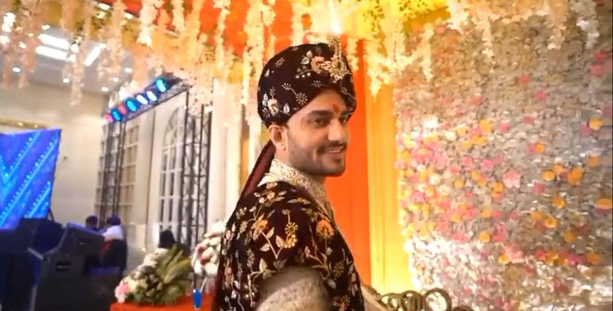
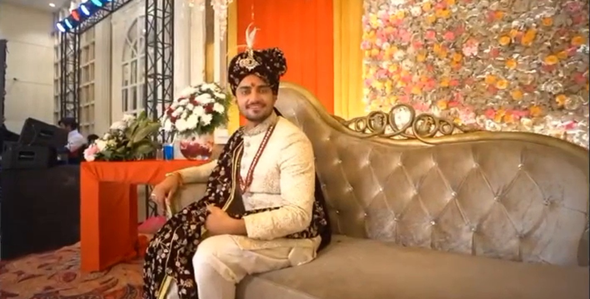

Wedding Photography
Portraits, rituals, family and candid moments with a timeless visual approach.

ANSH DIGITAL STUDIO

THE STUDIO
Great wedding photography is more than posed portraits. It is the nervous smile before a ceremony, the movement of a baraat, family reactions, colour, chaos and quiet moments in between.
Tell us about your date ↗WHAT WE CAPTURE
Portraits, rituals, family and candid moments with a timeless visual approach.
Natural frames built around expression and movement rather than stiff posing.
Relaxed, location-led sessions shaped around the couple and their personality.
Family functions, corporate events and special occasions documented with care.
SELECTED STORIES

Portraits, details and atmosphere before everything begins.

THE EXPERIENCE
Direction when it helps. Space when the moment is already happening. A simple process designed to keep the celebration natural.
Plan timings, people and must-have moments.
Capture the story without interrupting it.
Curate a visual story worth revisiting.
“The photograph matters because the moment did.”
WHAT CLIENTS SAY
“Our friends can't stop praising our photos. The best photographer in south Delhi for sure.”
Devraj Kumar · Google review“Great coverage of our annual conference. Definitely the best photographer in Delhi.”
Kunal Nishana · Google review“One of the best photographers. I have used his services multiple times for my functions.”
Anant Gupta · Google reviewYOUR DATE. YOUR PEOPLE. YOUR STORY.